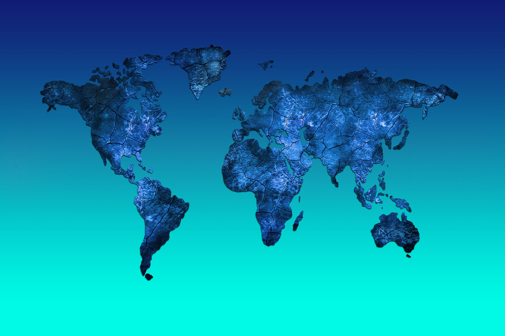

Migration de l'Haplogroupe Y
Y-Adam
Afrique Centrale/Est
~236 000 ans
Ancêtre commun patrilinéaire de tous les hommes vivants
📍 Périodes de Migration
Afrique ancienne (236-190 kya)
Afrique diversification (190-88 kya)
Sortie d'Afrique (88-60 kya)
Expansion Asie (60-47 kya)
Asie Centrale (47-38 kya)
Sibérie/Steppes (38-28 kya)
Vers l'Europe (28-10 kya)
France/Ibérie (4 kya-450 av. J.-C.)
~236 000 ans (Y-Adam)
Aujourd'hui
Étape 1 / 33